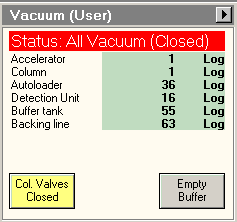
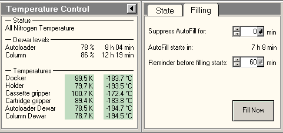
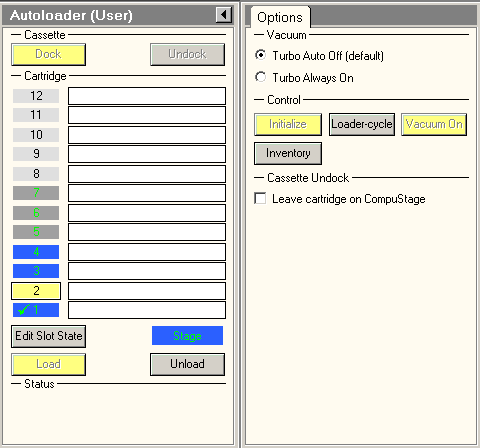
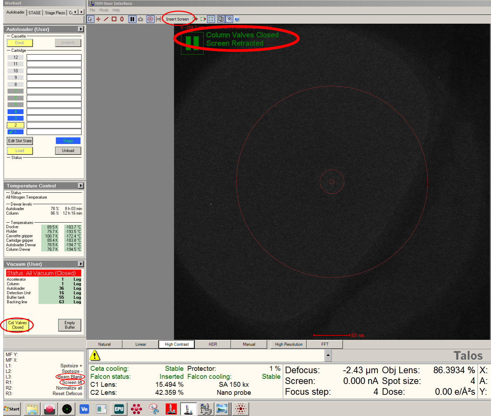
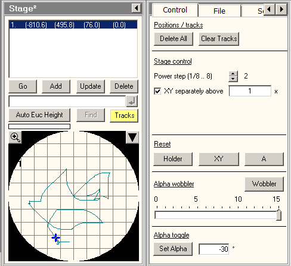
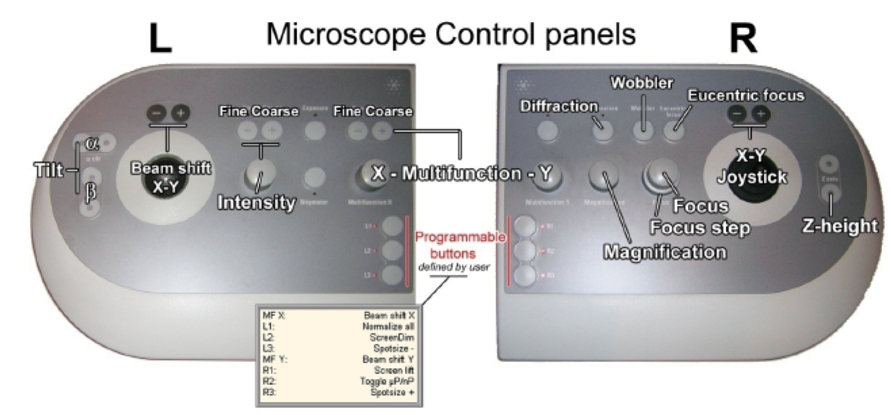
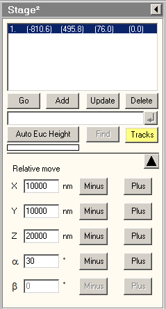

Talos Artica Operation¶
Launch Scipion Session¶
Before you start your microscope session you need to start the scipion session.
Vacuum and Temperature¶
Check that the column & autoloader vacuum and temperature is good. Typical values for the vacuum are log 1 for the column, log 15-30 for the autoloader; the autoloader temperature should be below -180C.
 Cassette Loading and Inventory¶
Once the microscope is cold, you can load the cassette. After the cassette is loaded, run an inventory from the Autoloader tab, make sure that all the positions that you loaded are properly detected. Occupied positions are shown in blue, empty ones in grey.
Start EPU¶
In case EPU is not open yet, start EPU via the Start menu. If the column valves are closed ignore the message. The window will be hiding behind the user interface software. Drag it to the second screen, minimise and maximise it again.
Note
If SerialEM is open, SerialEM must be closed before opening EPU.
Note
TIA needs to be started for EPU to open and run. In case TIA is not open yet, start TIA via the Start menu.
Load EPU Settings¶
In EPU, click on the Preparation tab, Acquisition and Optics settings. Here all the microscope conditions can be inputted to the software for the Atlas, Grid-square, Hole/Eucentric height, Data acquisition, Autofocus and Drift measurement.
- To make it simple, we have predefined the most common EPU settings, which you can Import via the import tab:
Navigate to computer/staging/fac/settings/EPU/general
Choose the relevant file and press open
Save the file in your own directory and modify if needed.
Warning
Please take care to not overwrite the faciltity EPU settings files!

Open Column Valves¶

Load the atlas presets.
Open the column valves. You can check the valve, screen or blanking state at the top left corner of the flu-cam viewer.
Now insert the flu-screen. You can either press R1 or Press ‘Insert Screen’ from the FluCam Menu.
In case the beam is blanked, unblank the beam (press L3). Now there should be no more green messages at the top left corner of the flu-cam viewer.
Now you should be able to see the beam. If you still can’t see the beam, you could double check that the high tension is on (yellow HT button in the FEG control tab of the microscope user interface). If the HT is on, but the beam is weak check that the operate button for the FEG is on (extraction voltage should be 4450, gun lens should be 5).
Load cartridge¶
Load the cartridge that you like by clicking on the position you want to load and then click on load in the Autoloader tab (this will take few minutes). You will notice that the column valves close automatically.
Low Mag Grid Screening¶
Open the column valves and insert the screen. If you can’t see the beam, it could be that your ice is to thick for the current grid position. In that case, go to Stage and change the grid position (use joystick or double click in the stage map).
Use the joystick to navigate to the grid squares.
Find an empty square and add its position and then find an adjacent square/area, with carbon film, to do the alignments. You can name your grid square positions accordingly.
Eucentric Height¶
For any imaging or alignment, always bring the speciment to eucentric height (at Grid square magnification).
Use the joystick to put a feature in the center of the flu-screen
Go to the Stage tab.
Set Alpha to 30 degrees.
Recentre the feature with the Z height.
Reset the stage tilt.
Set the grid square presets and redo the eucentric height.
Set the hole-eucentric height presets, insert the objective aperture (100um) and redo the eucentric height.

Note
In the status line you will see how the values for z height (Z) and alpha (A) change. It is important that you first centre your feature without tilt and use the z button when the stage is tilted.
Note
Doing the eucentric height at diffiferent magnifications ensures that the feature does remain in the field of view. Z can be roughly set for atlas and grid square magnification and has to be exact for hole eucentric height.
Autofocus¶
Navigate to a carbon area and set the ‘data acquisition’ presets.
Open the direct alignment tab (bottom right of monitor).
Press Beam shift and centre the beam using multi-function x&y.
Press Done when finished.
Note
If you cannot see the beam lower the magnification.
Go to the auto-functions panel in EPU and select autofunctions-TEM, Autofocus, preset Autofocus
Press Start.
Warning
Do not use the calibrations!
Autostigmate¶
Go to the auto-functions panel in EPU and select autofunctions-TEM, Autostigmate, preset Thon Ring
Press Start.
Grid Screening¶
Note
The microscope is now aligned for screening.
Use the atlas preset to navigate to a grid square.
In atlas mode always retract the objective aperture.
Use the grid square and hole / eucentric height presets to locate your target areas.
Always insert the objective aperture in hole / eucentric height preset.
Redo the eucentric height.
Retract the flu-screen.
Take an image with data acquisition preset.
Save your images in your working directory via right click and save with overlay.
Note
If the beam is moving into your image, centre the beam with beam shift.
Microscope alignment for EPU data collection¶
Import your presets for either linear (short exposure with high dose) or counting mode (long exposure with low dose).
Note
The counting mode set up is more difficult, because the beam is very dim and one needs long exposure times when executing the auto-functions.
Set the hole-eucentric height presets.
Retract the objective aperture
Redo the eucentric height.
Navigate to a carbon area and set the ‘data acquisition presets.
Insert screen.
Open the direct alignment tab.
Centre the beam with beam shift.
Do the Autofocus routine.
Run the Autocoma routine as described here.
Insert the objective aperture.
Optionally, verify parallel illumination
Redo the auto-focus and stigmator autofunction.
Warning
Do not redo the coma-free alignment.
Check the beam dose¶
Go to an empty square with atlas presets (or in case you saved the position in your stage map, press go).
Load data acquisition presets.
condense & centre beam.
Press Set again (in order to spread the beam to its original size).
In the EPU panel, press measure dose.
Note down the exposure dose and adjust the exposure time accordingly. For F3EC use, follow the procedure here.
Atlas and EPU set up¶
You can now proceed to atlas acquisition and EPU set up.